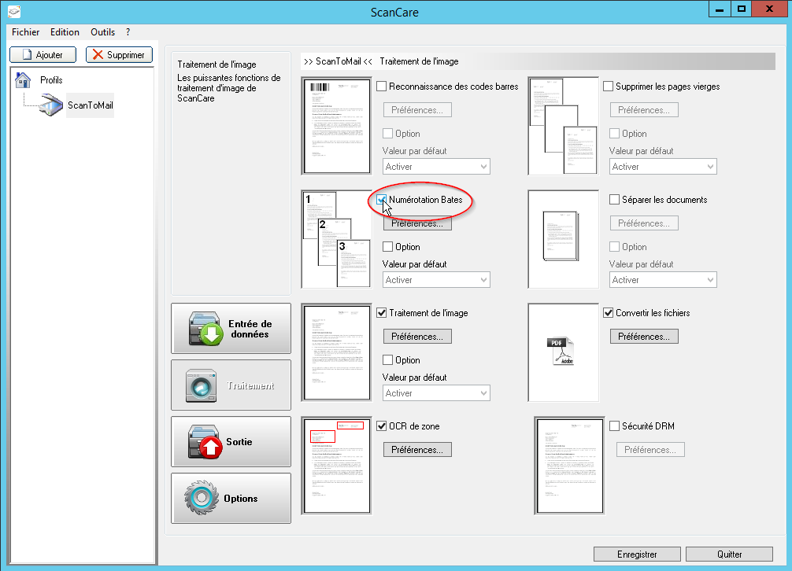
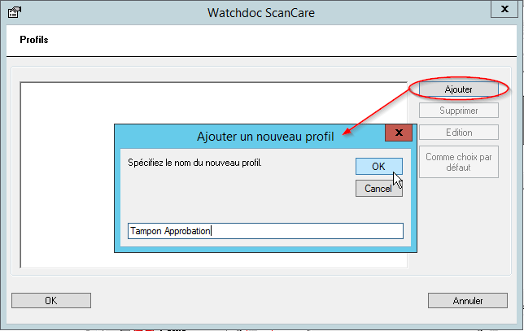
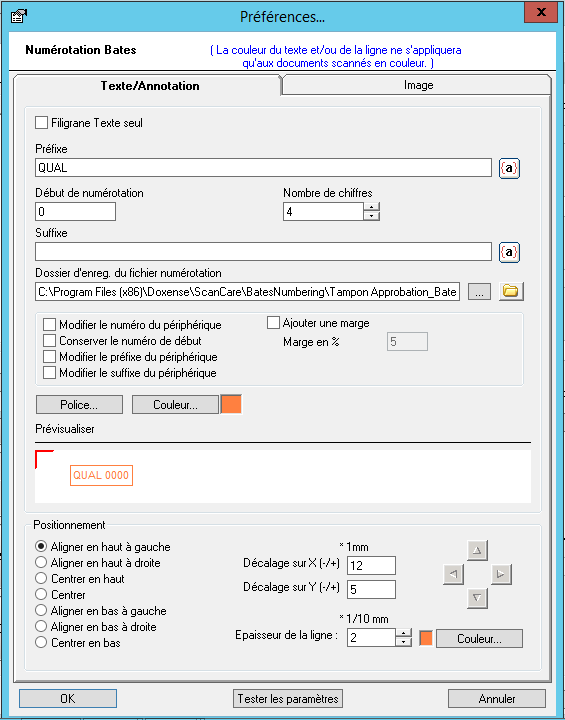
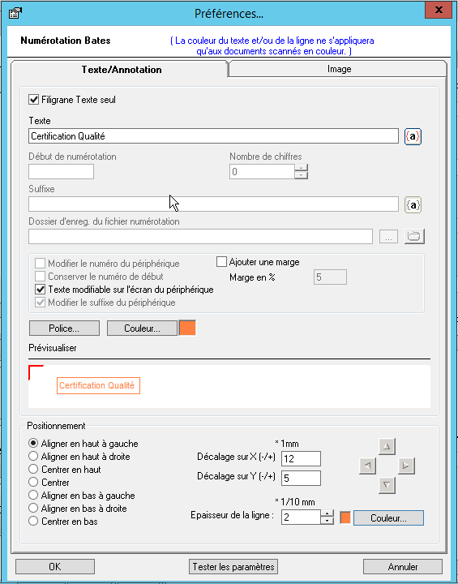
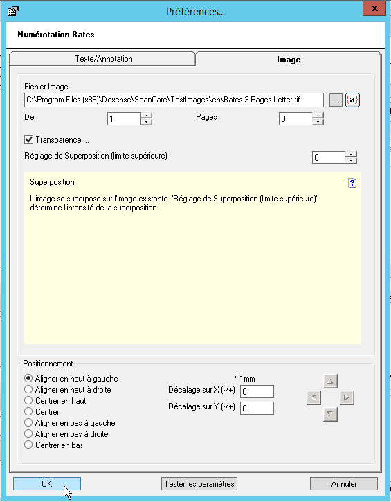

Watchdoc ScanCare - Configurer la numérotation
Présentation
La fonction Numérotation permet d'appliquer un numéro, un texte ou une image, sur toutes ou une partie des pages du document numérisé.
L'élément ajouté dans les pages doit être configuré sous forme d'un Profil dans lequel sont précisées ses caractéristiques (taille, police de caractères, couleur, etc.).
Pour activer la numérotation, il est nécessaire de disposer du module Scanner Power Tools (SPT).
Procédure
Configurer un numéro
Pour configurer la numérotation des pages :
-
lancez le programme de configuration de Watchdoc ScanCare ;
-
sélectionnez un profil de numérisation existant ou créez-en un ;
-
rendez-vous dans la section Traitement ;
-
cochez la case Numérotation Bates, puis cliquez sur le bouton Préférences ;

-
dans l'interface Profil, cliquez sur le bouton Ajouter pour créer un profil de numérotation spécifique ;
-
dans l'interface Ajouter un nouveau profil, saisissez un nom pour désigner le nouveau profil de numérotation puis cliquez sur le bouton OK ;

→ l'interface Préférences... Numérotation Bates s'affiche. Elle comporte 2 onglets :
-
Texte / Annotation : onglet dans lequel vous paramétrez l'ajout de numéros de pages ou de mentions textuelles dans le document numérisé ;
-
Image : onglet dans lequel vous paramétrez l'ajout d'images dans le document numérisé.
Configurer un texte, une annotation
Dans l'onglet Texte/Annotation,
-
décochez la case Filigrane Texte seul si vous souhaitez ajouter une numérotation au document, puis complétez les champs suivants qui vous permettent de construire un système de numérotation personnalisé alliant, si nécessaire un préfixe, un nombre de chiffres précis et un suffixe :
-
Préfixe : si nécessaire, saisissez dans ce champ un préfixe précédant la numérotation. Vous pouvez aussi utiliser les variables et fonctions pour ce suffixe (cf. ci-dessous la partie Utiliser les variables et fonctions) ;
-
Suffixe : si nécessaire, saisissez dans ce champ un suffixe suivant la numérotation (cf. ci-dessous la partie Utiliser les variables et fonctions) ;
-
dans le champ Début de numérotation, indiquez le chiffre à partir duquel doit débuter la numérotation des documents ;
-
dans le champ Nombre de chiffres, indiquez le nombre de chiffres que doit contenir le numéro attribué au document ;
-
-
Dossier d'enreg. du fichier numérotation : gardez le dossier par défaut dans lequel est enregistré le fichier de paramétrage de la numérotation ou cliquez sur le bouton pour parcourir l'environnement de travail et y sélectionner le un fichier de paramétrage existant.
Vous pouvez aussi cliquer sur le bouton pour parcourir l'environnement de travail à la recherche du dossier dans lequel vous souhaitez enregistrer le fichier de paramétrage.
-
Modifier le numéro du périphérique : cochez la case pour permettre à l'utilisateur de modifier le numéro de la première page à partir de l'écran du périphérique ;
-
Conserver le numéro de début : cochez la case pour que le numéro de début soit appliqué sur chaque première page d'un nouveau document ;
-
Modifier le préfixe du périphériques : cochez la case pour permettre à l'utilisateur de modifier le préfixe de numérotation à partir de l'écran du périphérique ;
-
Modifier le suffixe du périphérique : cochez la case pour permettre à l'utilisateur de modifier le suffixe de numérotation à partir de l'écran du périphérique.

-
-
pour ajouter un Filigrane Texte seul, cochez la case dédiée, puis complétez les champs suivants :
-
Texte : saisissez dans le champ le texte à afficher dans les documents. Vous pouvez aussi ;
-
Texte modifiable sur l'écran du périphérique : cochez la case pour préciser si le texte peut être modifié par l'utilisateur depuis l'écran du périphérique. Si la case est décochée, le texte est imposé.

-
Configurer une image
-
Dans l'onglet Image, dans le champ Fichier Image, saisissez directement le chemin ou cliquez sur le bouton
 pour parcourir votre espace de travail à la recherche de l'image que vous souhaitez ajouter aux documents numérisés. Vous pouvez aussi utiliser les variables et fonctions pour compléter l'image (cf. ci-dessous la partie Utiliser les variables et fonctions) ;
pour parcourir votre espace de travail à la recherche de l'image que vous souhaitez ajouter aux documents numérisés. Vous pouvez aussi utiliser les variables et fonctions pour compléter l'image (cf. ci-dessous la partie Utiliser les variables et fonctions) ;-
De : précisez dans ce champ le numéro de la page à partir de laquelle l'impage doit être ajoutée ;
-
Pages : indiquez le nombre de pages du document numérisé sur lesquelles l'image doit être affichée ;
-
Transparent : cochez cette case pour utiliser l'image comme filigrane et définissez l'intensité de la superposition à l'aide du paramètre Réglage de superposition.

-
Configurer le positionnement
Pour un texte comme pour une numérotation, vous disposez d'options permettant d'affiner leur positionnement :
-
Ajouter une marge : cochez la case et précisez le pourcentage si vous souhaitez ménager une marge entre le bord de la feuille et le texte ;
-
définissez la Police de caractère et la Couleur du texte ou de la numérotation en cliquant sur les boutons dédiés et en effectuant un choix.
-
Pour un texte comme pour la numérotation, utilisez les options de la section Positionnement afin de définir la position que doit occuper le texte dans la page et l'encadrer, si souhaité. Le résultat du paramétrage s'affiche dans la fenêtre de prévisualisation.